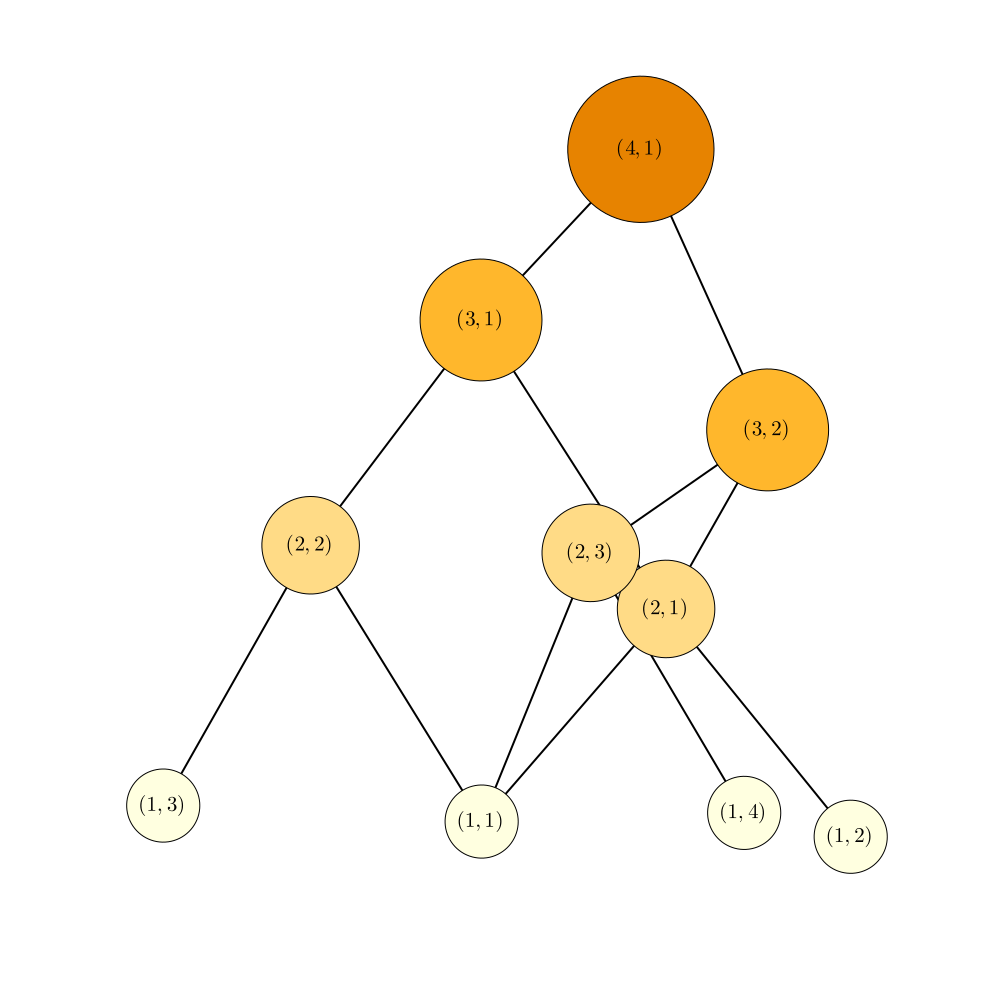

Visualization
Recipes
NonlinearSchrodinger.jl provides recipes for Plots.jl to make plotting easy. You can simply call any plotting function on a ::Sim or ::Calc object, as shown in the Examples page.
Visualizing Recursion
We can visualize the DT recursion as follows. We acknowledge the major assistance provided by Simon Schoelly (@simonschoelly) in writing this code.
using LightGraphs, MetaGraphs, Plots, GraphRecipes, LaTeXStrings
default(size=(1000,1000))
function gen_rec_graph(N, pal)
function DT_recurse(n, p, g, N, pal)
if !haskey(g[:name], (n, p)) # if there is not already a node with name (n, p)
# add a new vertex and set it's name to (n, p)
# the most recent added vertex always has the index nv(g)
add_vertex!(g)
set_prop!(g, nv(g), :name, (n, p))
set_prop!(g, nv(g), :size, N)
set_prop!(g, nv(g), :col, pal[N])
end
if n != 1
# recurse as usual
DT_recurse(n-1, 1, g, N-1, pal)
DT_recurse(n-1, p+1, g, N-1, pal)
# at this point, the vertices with the names (n, p), (n-1, 1) and (n-1, p+1) already exist
# so we look them up by their name
v1 = g[(n, p), :name]
v2 = g[(n-1, 1), :name]
v3 = g[(n-1, p+1), :name]
# add edges (n, p) -> (n-1, 1) and (n, p) -> (n-1, p+1)
add_edge!(g, v1, v2)
add_edge!(g, v1, v3)
end
return nothing
end
g = MetaDiGraph() # empty graph
set_indexing_prop!(g, :name) # allows one to look up nodes by the attribute :name
DT_recurse(N, 1, g, N, pal)
return g
end
N = 4
pal = palette(:heat, Int(floor(1.5*N)))
g = gen_rec_graph(N, pal)
p = graphplot(g, names = [latexstring(get_prop(g, v, :name)) for v in vertices(g)],
arrow=:arrow,
nodeshape=:circle,
curvature_scalar=0.0,
nodeweights=[get_prop(g, v, :size) for v in vertices(g)],
markercolor=[get_prop(g, v, :col) for v in vertices(g)],
fontsize=14,
markersize=0.04,
linewidth=2,
method=:tree,
curves=false)/home/runner/.julia/packages/GR/G9I5v/src/../deps/gr/bin/gksqt: error while loading shared libraries: libQt5Widgets.so.5: cannot open shared object file: No such file or directory connect: Connection refused GKS: can't connect to GKS socket application GKS: Open failed in routine OPEN_WS GKS: GKS not in proper state. GKS must be either in the state WSOP or WSAC in routine ACTIVATE_WS

Note that the placement of the nodes is a little random, you might have to issue the plot command a few times to get a satisfactory result wheret he nodes don't overlap.